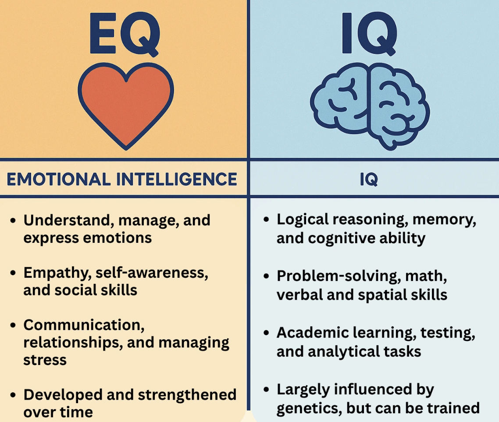

Emotional Intelligence
Screaming, crying, throwing up
WHAT IS EMOTIONAL INTELLIGENCE?
The first formal academic definition of emotional intelligence was included in Peter Salovey and John Mayer's 1990 study called “Emotional Intelligence. In layman's terms they defined it as a set of skills that include:
- Recognising and expressing emotions in yourself and others
- Managing your own emotions effectively
- Using feelings to stay motivated, plan and reach your goals
Even though the study is 25 years old, the definition remains mostly unchanged. Psychology Today defines it as including a “…a few skills: namely emotional awareness, or the ability to identify and name one's own emotions; the ability to harness those emotions and apply them to tasks like thinking and problem solving; and the ability to manage emotions, which includes both regulating one's own emotions when necessary and helping others to do the same.”
WHAT IS THE DIFFERENCE BETWEEN EQ AND IQ?
Before looking at the difference between EQ and IQ, it's first important to define IQ. The Collin's dictionary defines Intelligence Quotient (IQ) as "a measure of the intelligence of an individual derived from results obtained from specially designed tests”. Basically it's traditional definition is a score that measures how “smart” someone is, but that definition of smart is centred around reasoning, memory and problem solving. However nowadays it's used more loosely to refer to someone's general intelligence, even when no formal test score is involved.
The difference is pretty intuitive, but I think an article written by Dovetail summed it up pretty well - “While IQ primarily measures cognitive abilities such as logical reasoning, problem-solving, and analytical skills, EQ refers to your aptitude for understanding and managing emotions, empathising with others, and building effective interpersonal relationships”.
WHY SHOULD YOU CARE ABOUT EQ
Emotional intelligence can help you lead people, manage teams and collaborate with others. Harvard Business School see's it as one of the most sought-after skills in the workplace, with 71% of employers valuing emotional intelligence more than technical skills when evaluating candidates. They also talk about how it is an especially important quality in leaders, as it is crucial for fostering positive team dynamics, empathy and collaboration.
This study in Iran also found that emotional intelligence was a predictive factor in happiness. The study of 300 medical students found that those with higher levels of EQ were better able to understand and regulate their emotions, leading to reduced stress, burnout and anxiety - all factors that lead to increased happiness. Also, students were able to form stronger interpersonal relationships, another thing that lead to an increased sense of wellbeing.